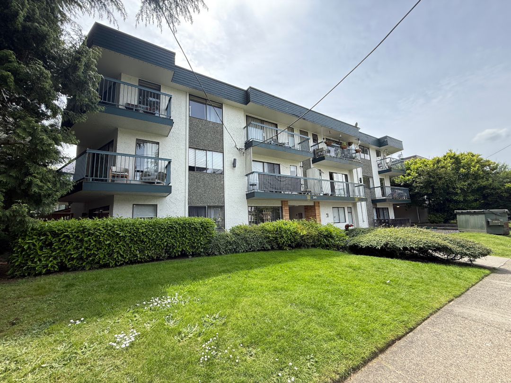
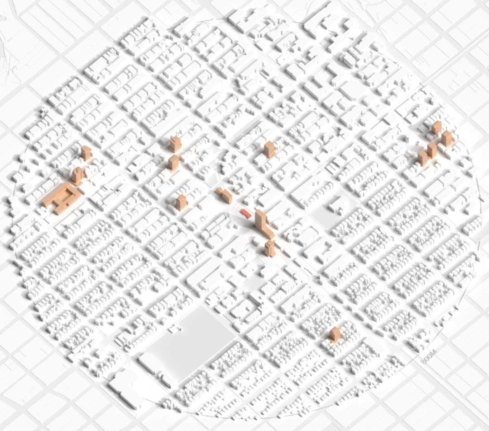
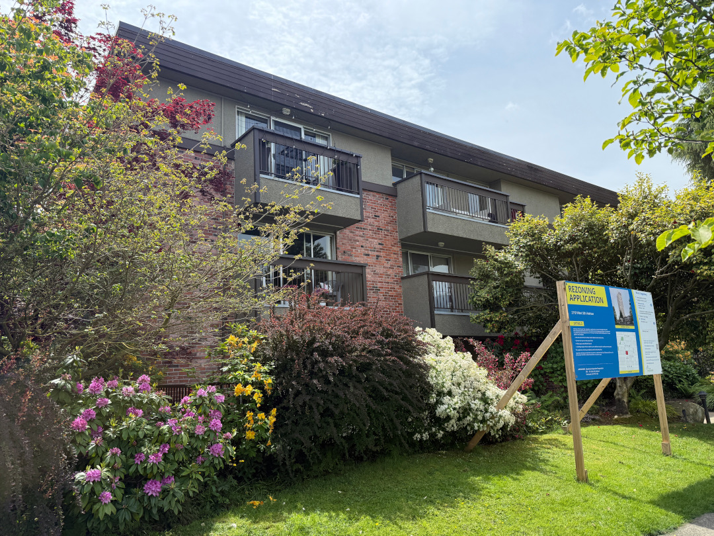
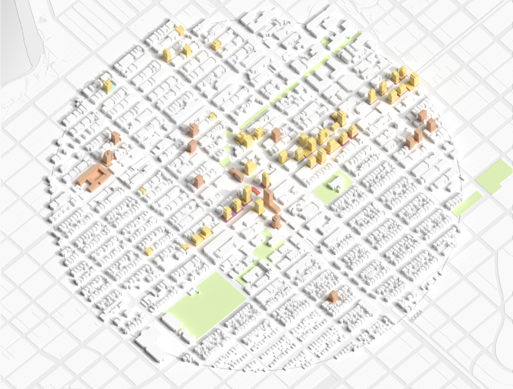
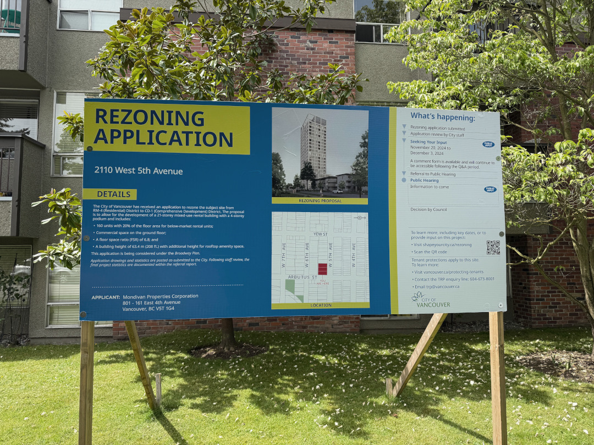

This page is under development :) Please do not share without permission
CASE STUDY
ARBUTUS STATION
VANCOUVER, BC
How can we preserve the best features of established neighbourhoods while increasing density around transit?
ARBUTUS STATION
Animation Frame 1: alt alt
Description: When Vancouver’s Arbutus Station opens in 2027, it will anchor the Millenium Line’s new western terminus as a prominent example of ambitious transit-oriented development (TOD) in a mature neighborhood.
Animation Frame 2: alt alt
Description: Arbutus Station is in many ways already a complete community, characterized by an active commercial corridor along Broadway, strong pedestrian activity, and a station that enables multimodal travel.
Animation Frame 3: alt alt
Description: The challenge will be ensuring that the area’s affordable housing stock and many amenities remain despite densification, so it can continue to be a home for people of all income levels.
A core strategy must tackle valid concerns around social disruption: the threat of displacement, perceived incompatibility of uses, and the risk of delayed delivery of housing and amenities.
This is one of five case studies produced by the School of Cities to identify different kinds of transit-oriented development across Canada and to explore the opportunities and trade-offs involved in creating thriving communities near transit. In each case, we examine current patterns of growth and project what that community might look like in 20-30 years if development continues in this way (the “current trajectory”). We then present an alternative, “optimized” scenario that imagines policy and design changes that could address common challenges. All station area renderings are conceptual and should not be interpreted as specific guidance for individual properties. Renderings were created by the Infrastructure Institute in 2025 and may not reflect more recent proposals.
Neighbourhood overview
Located in Vancouver’s Kitsilano neighbourhood, the area around Arbutus Station is established, with more than 30,000 residents. The community is diverse: one-third are immigrants and another quarter come from outside the province. This diversity contributes to a wide range of housing needs and service demands.
The area is largely built out, with 79% of its structures built more than 25 years ago.
Low-rise apartment units make up 77% of the households within an 800-metre radius of the station, forming the backbone of the neighbourhood’s rental stock. These older rental apartments provide unsubsidized affordable housing, sometimes known as “naturally occurring affordable housing” (NOAH), but are increasingly vulnerable to redevelopment pressures as the area densifies.1

Low-rise apartment near Arbutus Station. Photo by Carrie Zeng (2025)
This vulnerability shows up in the area’s tenure profile: 57.1% of households rent, well above the national average of 46.8%. Most residents in these units are young to middle-aged professionals living alone. Detached, semi-detached, and row houses, very expensive because of the area’s prime location, make up just 8% of households.
Arbutus has a vibrant main street with a wide variety of retail and services, supporting a strong local economy and steady foot traffic.
However, there are gaps in community-serving amenities such as community centres, convenience stores, and particularly libraries. Residents are also concerned that essential public services, including parks and schools, may not keep pace to serve the rapid population growth. Supporting equitable growth here involves balancing redevelopment with the needs of current residents and the broader community.
Arbutus’ current trajectory
The City’s Broadway Plan, approved in 2022, provides a 30-year vision for the Arbutus Station area, outlining growth, transit-oriented development, and mixed-use intensification in the station area. The plan uses tools such as mass rezoning and Below Market Rate (BMR) rental requirements to guide development while integrating public spaces and amenities.
Implementation is already underway: over 14 proposals, mostly for 20-30 storey towers, are moving through the rezoning process. Many of these projects have already met the mandated policy of at least 20% BMR rental units.

Currently proposed or under construction development 800m from Arbutus Station.Infrastructure Institute (2025).
If trends continue, the area could see approximately 7,000 new units (including more than 1,400 BMR units), nearly 10,000 new residents, and 1,700 new jobs. Early successes include meeting housing supply and affordability targets, along with plans for new public spaces.
The Broadway Plan also includes robust anti-displacement measures, created after extensive community engagement and with tenant dislocation a core concern. In 2022, City Council approved enhanced tenant protections under the Broadway Plan, in addition to the City-wide Tenant Relocation and Protection Policy (TRPP). For tenants who relocate as a result of redevelopment in the Broadway Plan area, these enhanced policies provide rent top-ups for up to 33 months’ rent (or financial compensation), moving cost coverage, relocation support, additional assistance for low-income tenants, and the right to return at protected rents.2 The City has also published a Tenant Relocation and Protection Policy Best Practices Guide for developers or property owners of existing rental buildings.3
To support the implementation and oversight of these requirements, the City has committed to quarterly monitoring and reporting on tenant impacts.4 There are also planned 5-year checkpoints to revisit and adjust the plan’s policies as redevelopment progresses. This provides an opportunity to respond to emerging issues while providing planning certainty and avoiding potential political interference.
Recognizing that redevelopment can also disrupt commercial activity, the City has introduced measures to support local businesses. These include a Mitigation Team, wayfinding programs, public art initiatives, and business awareness campaigns.5
The City of Vancouver is exploring ways to support local businesses during redevelopment, including with wayfinding and signage.Photo by Carrie Zeng (2025).
While these policies are among the strongest in Canada, implementation gaps remain. Mass rezoning designed to expedite housing delivery has been linked with speculation that drives up land values, which could undermine affordability. Long approval windows may create incentives to sit on land as it increases in value rather than build, increasing pressure on existing rental stock while delaying replacement housing. Higher-cost land can also pressure developers to build bigger simply to make the numbers work while meeting mandated affordable unit targets. Finally, eliminating site-specific public hearings has prompted concerns about an erosion of democratic participation.
Long-term renters are especially vulnerable. Those in existing unsubsidized affordable housing – predominantly low-income people of colour – often live in older, low-rise buildings that are the primary targets for redevelopment.6 Delays between tenant evictions and the completion of replacement units, combined with inconsistent enforcement of tenant protection policies, have heightened fears of displacement.
In some cases, tenants report deferred maintenance or pressure from landlords to take buyouts following rezoning approvals, creating instability before formal eviction processes begin. In newly constructed buildings, rent may be structured as a base amount plus mandatory ancillary costs – such as parking or utility fees – increasing total housing costs and discouraging former tenants from returning.
Gentrification describes a process in which demographic and economic shifts – often the arrival of more affluent, higher-educated residents or new investment – reshape local markets in a working class area.
Gentrification can lead to displacement, which is when people are forced to leave their homes or neighbourhoods due to external pressures.
Displacement can take several forms:7
Direct displacement occurs when residents are forced to vacate a property due to direct forces such as eviction, expropriation, or disinvestment.
Indirect displacement is when residents can no longer afford rising rents or property taxes, often a result of speculation
Exclusionary displacement refers to conditions where people are unable to move into a neighbourhood due to external conditions such as unaffordable housing, restrictive zoning, and cultural dissonance
Even with strong affordability requirements, policy and real estate trends suggest that these older rental buildings will continue to be systematically targeted for replacement by new mixed-use residential towers. This is a common challenge in many TOD areas, where planners must balance growth, housing supply, and affordability while preserving existing unsubsidized lower-rent housing for long-term tenants.

Low-rise, affordable buildings are often the first to be targeted for redevelopment.Photo by Carrie Zeng (2025).
Optimized scenario: Advancing an equity-centred TOD approach
What improvements could be made to an already robust city plan to better support equitable outcomes as redevelopment accelerates?
The Broadway Plan provides a strong foundation for transit-oriented growth, combining streamlined approvals with clear affordability and tenant protection requirements. The primary concerns are less about what is being built and more about how it is being delivered. Rather than rework the plan’s approach, the focus here is on targeted refinements that strengthen equity outcomes as implementation advances.
To offer a contrast to the current trajectory, we created an “optimized” scenario that refines the City’s existing vision for the area by strengthening its spatial logic: where growth should be concentrated and how it should transition into surrounding neighbourhoods. The optimized scenario reinforces Broadway and Arbutus Street as active, mixed-use corridors and key destinations.
Density is strategically layered outward from these corridors, aligning height and intensity with transit access and surrounding residential areas. This approach supports active modes of travel and transit use while directing growth more effectively. Delivering equitable TOD requires balancing housing growth with social equity. To structure this approach, our recommendations are organizedhe 3Ps framework – production, preservation, and p10 This framework recognizes that no single policy lever is sufficient on its own, and achieving equitable outcomes require expanding supply, safeguarding existing affordable housing, and protecting current residents simultaneously.

RECOMMENDATION 1:
Continue production of new housing
The Broadway Plan provides a strong foundation for transit-oriented growth, combining streamlined approvals with clear affordability and tenant protection requirements. The primary concerns are less about what is being built and more about how it is being delivered. Rather than reworking the Plan’s approach, the focus here is on targeted refinements that strengthen equity outcomes as implementation advances.
Carefully designed density has been shown to coexist with liveable, sustainable neighbourhoods, supporting both housing supply and overall quality of life. Vancouver already has a long track record of delivering successful medium-density communities.13
Our optimized scenario puts higher-density, mixed-use development where it belongs: along Broadway, where commercial activity and transit access are already strongest. Focusing taller buildings and active ground-floor uses in these areas maximizes new housing while protecting the qualities cherished in neighbourhoods like Kitsilano.
Density then transitions step-wise into adjacent areas. Larger mid-rises are concentrated in existing apartment areas north of the station, with a gradual reduction in scale toward more modest infill in low-density areas to the south. This layered approach allows growth to be absorbed incrementally while maintaining neighbourhood livability.
Concentrating the greatest density closest to the station strengthens transit-oriented outcomes. Locating more residents and jobs within walking distance of rapid transit improves access to daily services, supports higher ridership, and enables more people to live and work near high-capacity transit.
RECOMMENDATION 2:
Preserve existing affordable housing and neighbourhood stability
Preserving existing unsubsidized affordable housing is critical to advancing equitable TOD, particularly in the early stages of redevelopment. Losing these homes through disrepair or redevelopment not only accelerates displacement, but also represents a missed opportunity for long-term wealth creation in marginalized communities, where landlords are often community members.14
Redeveloped sites typically meet the requirement of providing like-for-like replacements for lost units, and often deliver higher-quality buildings with modern amenities and improved performance standards for energy efficiency and seismic safety. At the same time, differences in unit size, layout, and access to features like parking can shape whether returning tenants experience comparable affordability and housing security.
As redevelopment accelerates, preservation should be treated as a core component of the City’s housing strategy rather than a secondary outcome. One opportunity is to explicitly recognize and track the supply of existing unsubsidized affordable housing in affordable housing targets, ensuring that the retention of existing affordable units is considered alongside the production of new ones.15
By supplementing the province’s Rental Protection Fund, the City can also support reinvestment in existing rental buildings. Offering grants and low-interest loans for upgrades and repairs would help address a key driver of affordable housing loss: deferred maintenance and limited access to capital. Preventative reinvestment can extend the life of existing buildings, improve living conditions for tenants, and reduce pressures to sell or redevelop prematurely.16
Where possible, existing affordable rental buildings in the neighbourhood should be preserved.Photo by Carrie Zeng (2025).
This theme can also extend to the preservation of neighbourhood stability and trust as density increases.
While mass rezoning is an essential tool to expedite housing delivery, long-term success depends on trust built through public engagement. Rather than relying on site-specific negotiations, neighbourhood-level design standards – developed through meaningful, upfront consultation – could be integrated into pre-zoning frameworks.
Best practices in sustainable urban development emphasize that context-sensitive design and participatory planning are key to balancing growth with place-making and equity objectives. Vancouver’s experience shows that achieving this requires collaboration between politicians, developers, city planners, and local community members to craft locally responsive solutions.17
Attention to land use compatibility is essential in a diverse station area such as Arbutus. Identifying and thoughtfully managing potentially incompatible uses near sensitive community assets can help prevent conflict, reduce opposition to new development, and support a safe, inclusive environment for everyone to thrive.

Protecting tenants during redevelopments – such as this proposed 21-storey mixed-use rental building – will be essential for mitigating displacement.Photo by Carrie Zeng (2025).
RECOMMENDATION 3:
Protect current residents
Government policies can help ensure that residents stay in place as neighbourhoods densify. Research shows that neighbourhood stabilization strategies are more effective at preventing direct displacement than housing production and preservation, which primarily address indirect or exclusionary displacement.18
While the Broadway Plan’s tenant protections are strong, implementation gaps limit its effectiveness. Protections such as rent top-ups, relocation support, and the right to return at protected rents are vital, but the lack of a dedicated enforcement body reduces accountability. In addition, limited tenant education and access to counselling mean that many renters are unaware of the supports available to them or how to assert their rights. Tenants often report difficulty understanding their rights or navigating complex relocation processes. Language barriers, fear of landlord retaliation, and insufficient consultation can reduce the effectiveness of otherwise robust policies. Without clear mechanisms for enforcement and informed participation, long-term renters remain vulnerable.
The City has made strides in tenant education by introducing standardized, City-approved notification templates, which help ensure tenants receive accurate and consistent information early in the redevelopment process. Expanding this approach with clearer plain-language materials and greater transparency could further improve the process, empower renters to make informed decisions, and strengthen protections against displacement.
Moreover, the City should guarantee pathways for both temporary and permanent housing for tenants affected by redevelopment, ensure that enforcement is proactive rather than reactive, and expand tenant education and counselling services that help renters identify and secure new homes. By doing so, tenants would be better informed and protected, and policymakers could anticipate and prevent displacement before it occurs.
The current trajectory’s core direction is sound: density and speed are essential to building housing supply.
The path is not to slow growth, but a stronger delivery system. Successful, equitable TOD depends on balancing new development with the protection of existing residents, affordability, and neighbourhood stability.
Vancouver skyline.Photo by Luke Lawreszuk (2024).
Research and writing: Sarah Chan, Kathryn Exon Smith, Anika Reisha Taboy Architectural renderings: Daniel Lam, Phat Le Maps and data visualization: Jeff Allen, Isabeaux Graham Web development: Mieko Yao, Jeff Allen Additional contributors: An Pham, Carrie Zeng ~ March 2026